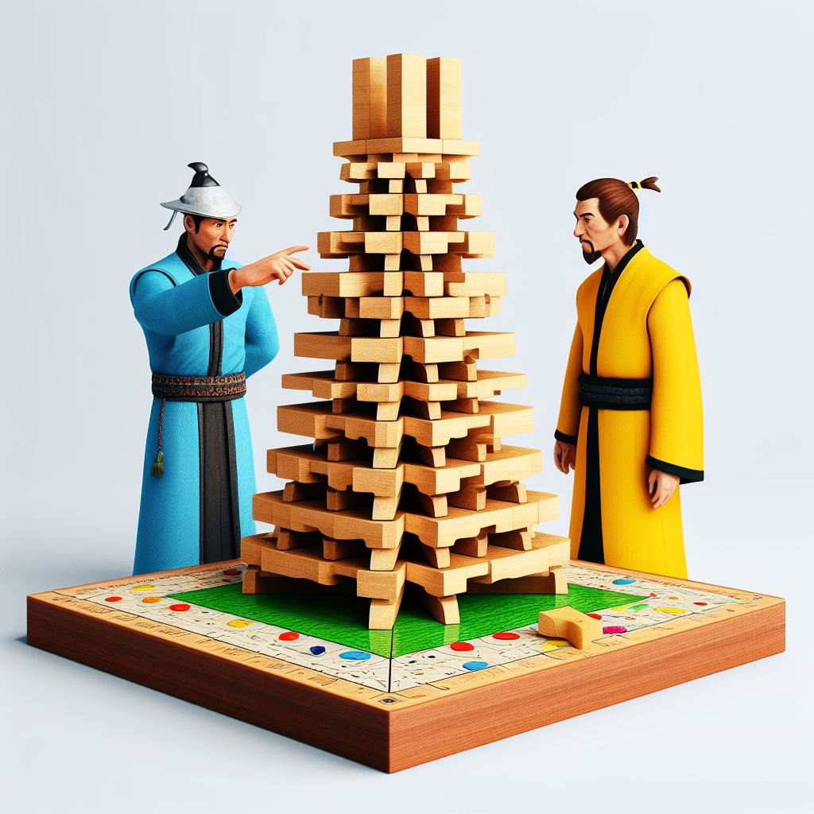
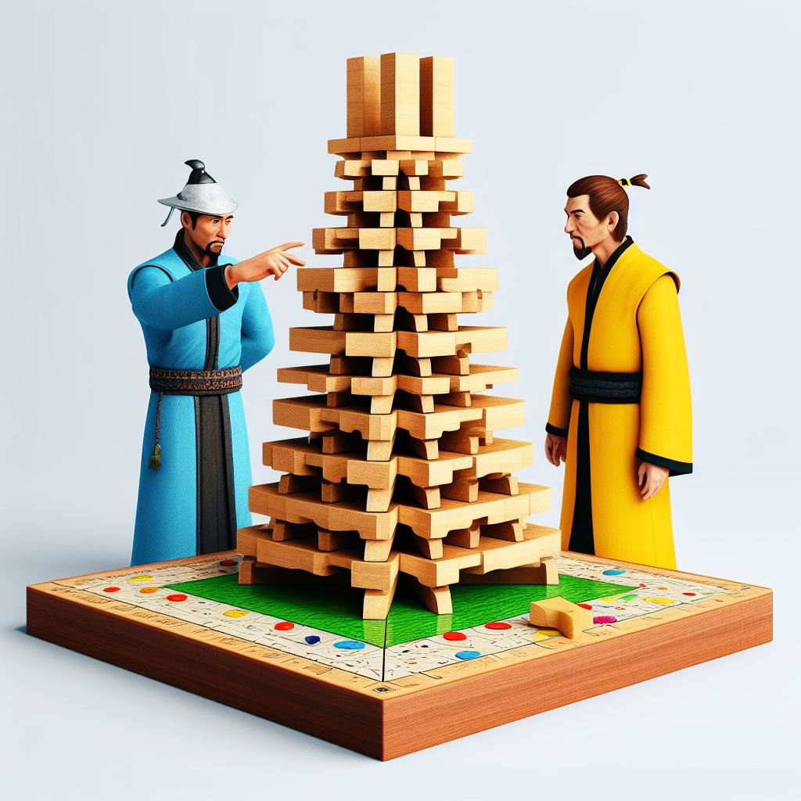

La Torre de Hanói, un fascinante rompecabezas matemático originario de Vietnam, se atribuye comúnmente al ingenio del matemático francés Édouard Lucas, quien, según la creencia, lo creó en 1883. Este desafío consiste en tres varillas verticales y una serie de discos de diversos tamaños que pueden deslizarse entre las varillas. El objetivo fundamental radica en trasladar todos los discos desde la varilla de origen hasta la varilla de destino, respetando la regla esencial de que ningún disco puede reposar sobre otro de menor tamaño.

 
